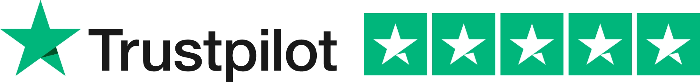

- Victor Emil Skafte Kongsbak
- Home
- Experience
- Contact
My Current Occupations
GoTutor ApS
I work at a danish firm called GoTutor. We provide targeted tutoring based on each individual childs needs. Our tutors are some of the best in Denmark and strive to end all bad well-being in preschool and highschool. Our motto is 'Every child deserves a happy childhood'.
At GoTutor i work as a sales-koordinator. Thoughtout my time at GoTutor i have acheived alot of experience in many different areas, such as human resources, costumer service, sales, administrative tasks, social media and much more.
You can find our webside here: GoTutor.dk

Team TreeHouse
I am currently studying an online tech degree at Team TreeHouse. Here i stribe to master topics like HTML, CSS and JavaScript. My goal is to be able to apply what i learn, in my everyday work. And hopefully be able to create websides on my own.
The reason why i started studying at Team TreeHouse, is to prepare myself for university. Here i wish to study IT and business economics.
Other Experiences and Occupations
- Virum Gymnasium, English and Mathematics
- Café de Picasso, as a barista and bartender
- Kickly, in costumer service
- Palæo, as a barista
Summary of My Primary Skills:
- Sales
- Human Resources
- Costumer Service
- Administrative Tasks
- Social Media
- HTML
- CSS
- Soon: JavaScript